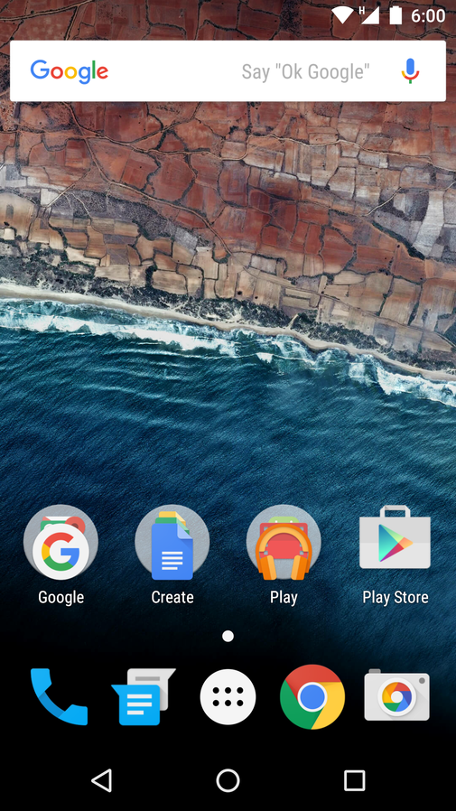

Android — (вимов. Андроїд) операційна система і платформа для мобільних телефонів та планшетних комп'ютерів, створена компанією Google на базі ядра Linux. Підтримується альянсом Open Handset Alliance (OHA).
Хоча Android базується на ядрі Linux, він стоїть дещо осторонь Linux-спільноти та Linux-інфраструктури. Базовим елементом цієї операційної системи є реалізація Dalvik віртуальної машини Java, і все програмне забезпечення і застосування спираються на цю реалізацію Java.
У 84 % смартфонів, проданих у 3-ому кварталі 2014 року, була встановлена операційна система Android[5].
Android, Inc. була заснована в Пало-Альто, у Каліфорнії, у жовтні 2003 року Енді Рубіном (Andy Rubin — співзасновник компанії Danger), Річардом Майнером (Rich Miner — співзасновник Wildfire Communications, Inc.), Ніком Сірсом (Nick Sears — колишній віце-президент компанії T-Mobile) і Крісом Уайтом (Chris White — очолював дизайн і розробку інтерфейсу в WebTV) для розробки, за словами Рубіна «більш розумних мобільних пристроїв, які краще знають про місце перебування власника і його вподобання». Ранні наміри компанії полягали в тому, щоб розробити вдосконалену операційну систему для цифрових фотоапаратів, але було зрозуміло, що ринок пристроїв не був достатньо великим, і вони спрямували свої зусилля на розробку операційної системи для смартфонів, щоб конкурувати з Symbian і Windows Mobile (на той момент Apple ще не випустила iPhone). Незважаючи на минулі досягнення засновників і ранніх співробітників, Android, Inc. працювала таємно, показуючи тільки те, що вона працювала над програмним забезпеченням для мобільних телефонів. Цього ж року Рубін залишився без грошей. Стів Перлман, близький друг Рубіна, приніс йому 10 тис. доларів готівкою у конверті та відмовився від своєї частки в компанії.
У липні 2005 року компанія Google купила Android, Inc.[7]. Усі засновники цієї стартап-компанії пішли працювати у Google. На той час, мало що було відомо про Android, Inc. окрім того, що вони займаються розробкою ПЗ для мобільних телефонів. Такий розвиток подій спричинив виникнення чуток про те, що Google планує увійти на ринок мобільних телефонів, але було незрозуміло, що саме компанія планує там робити.
У Google група на чолі з Рубіном розробила ОС на основі Linux (ядро v2.6), яку вони пропонували розробникам телефонів та операторам мобільного зв'язку як гнучку та розширювану систему. Повідомлялося, що Google планує співпрацю з рядом розробників апаратних компонентів та програмного забезпечення, і є відкритою для співпраці з операторами мобільного зв'язку[8][9].
У грудні 2006 року знову пішли чутки про те, що Google буде просуватися на ринок мобільних телефонів. Доповіді BBC і The Wall Street Journal зазначали, що Google хоче розмістити пошуковик Google і ПЗ Google на мобільних телефонах, і компанія постійно напружено працює для досягнення цієї мети.
Далі у пресі та онлайн-ЗМІ почали з'являтися чутки, що Google розробляє телефон під власним брендом. За цими були інші, які стверджували, що Google визначила технічні характеристики та вже презентує прототипи розробникам телефонів та операторам мобільного зв'язку. Повідомлялося, що буде реалізовано приблизно 30 прототипів[10]. Network World повідомляє, що Google-телефон дійсно є телефоном з відкритою операційною системою, на відміну від схожих продуктів, таких як iPhone[11]. Проектом створення смартфона з використанням відкритого коду, в тому числі з використанням ядра Linux.